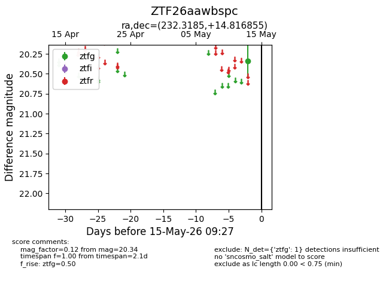
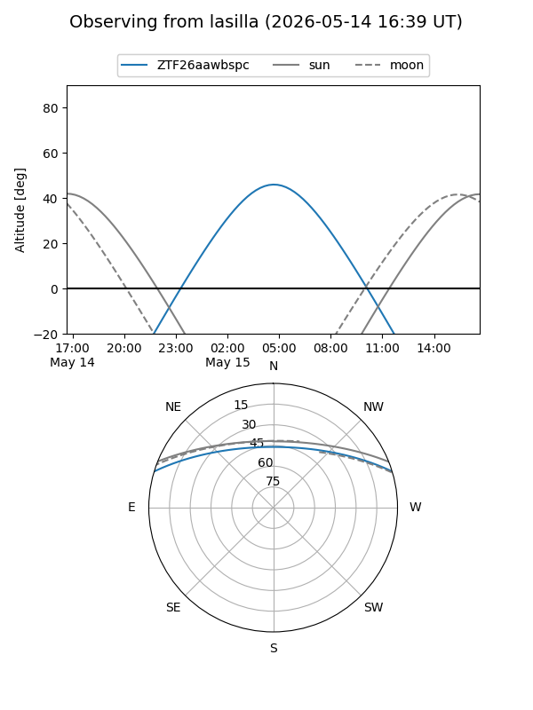
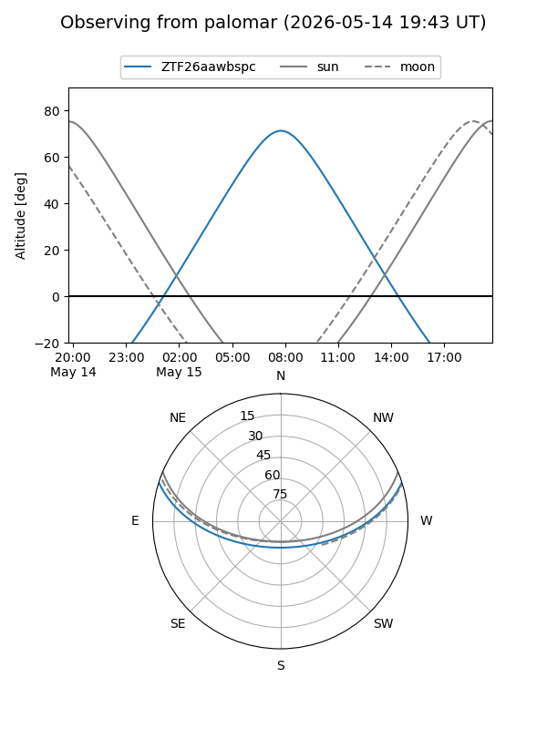

ZTF26aawbspc
Target ZTF26aawbspc at 2026-05-15 09:29
Aliases and brokers:
FINK: link
Lasair: link
ALeRCE: link
alt names
ZTF26aawbspc (ztf,fink_ztf)
Coordinates:
equatorial (ra, dec) = 232.3185,+14.81686
equatorial (HMS+DMS) = 15:29:16.44,+14:49:00.68
galactic (l, b) = (22.5328,+51.34320)
Flags:
Photometry:
last ztfg=20.34
1 ztfg detections
Lightcurve

Visibility


Additional plots